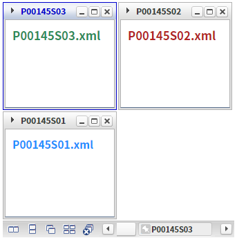
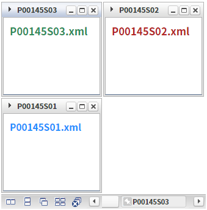
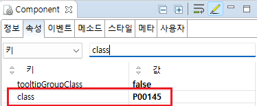

선택된 윈도우의 스타일을 적용하는 예제입니다. 선택된 윈도우는 class "w2window_selected" 가 추가됩니다. class "w2window_selected"를 재정의하여 기본 스타일을 변경할 수 있습니다.
선택된 윈도우에 스타일 지정
기본 선택된 윈도우 스타일
예제 영역 '선택된 윈도우에 스타일 지정하기'에서 테스트합니다.1
실행 결과를 확인합니다.
WindowContainer의 선택된 윈도우를 확인합니다.
윈도우의 테두리와 헤더 타이틀의 글자색이 푸른색으로 표현되었습니다.
Image 1.브라우저(Chrome) 실행 예시

예제 영역 '기본 선택된 윈도우 스타일'에서 테스트합니다.1
실행 결과를 확인합니다.
WindowContainer의 선택된 윈도우를 확인합니다.
Image 2.브라우저(Chrome) 실행 예시

윈도우를 생성(추가)하는 스크립트는 생략되었습니다.
1
STEP 1: WindowContainer의 속성을 정의합니다.
[선택] class="P00145"
이 컴포넌트에 별도의 스타일을 지정하기 위해 지정
Image 3.웹스퀘어 스튜디오의 Component View 예시

Example 1.Source
<!-- windowContainer 의 소스 본문 예시 --> <w2:windowContainer class="P00145"> <!-- 중략 --> </w2:windowContainer>
2
STEP 2: 선택된 윈도우 class를 정의합니다.
선택된 윈도우는 class "w2window_selected" 가 추가됩니다.
이 예제는 특정 컴포넌트에만 적용하기 위해 class "P00145"가 정의된 상태입니다.
프로젝트에서 import하고 있는 CSS 파일에 아래와 같이 class를 정의합니다.
Example 2.CSS
/* 다음의 경로에서 class를 확인할 수 있습니다. [프로젝트 경로]/WebContent/css/example.css */ /* P00145.xml WindowContainer의 선택된 윈도우 style */ /* 선택된 윈도우 */ .P00145.w2windowContainer .w2window_selected { border-color: MediumBlue;} /* 선택된 윈도우의 헤더 타이틀 영역 */ .P00145.w2windowContainer .w2window_selected .w2window_selected_header .w2window_header_title{ color: MediumBlue; }
class